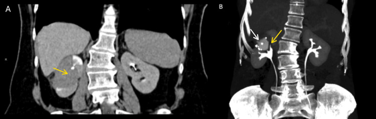

Ficha del catálogo
Carcinoma urotelial de la vía excretora superior
- Sistema
- Urinario
- Modalidad
- TC
- Región
- Pelvis renal y uréter
- Dificultad
- Avanzado
Es la neoplasia que se origina en el urotelio de los cálices, la pelvis renal o el uréter. Representa una minoría de los tumores uroteliales, que asientan sobre todo en la vejiga, pero comparte con ellos los factores de riesgo y la tendencia a la multifocalidad y a la recidiva. La hematuria macroscópica indolora es la forma habitual de presentación.
Técnica
La urotomografía con fase excretora es la técnica de referencia porque opacifica toda la vía y muestra los defectos de repleción. El estudio requiere fase simple para diferenciar cálculos, fase nefrográfica para el realce de la lesión y fase excretora tardía con buena distensión. La citología y la ureterorrenoscopia completan el diagnóstico.
Qué observar
- Defecto de repleción de partes blandas en la fase excretora
- Engrosamiento parietal focal o circunferencial de la pelvis o del uréter
- Realce del tejido tumoral en la fase nefrográfica
- Dilatación de la vía por encima de la lesión y del uréter distal a ella
- Infiltración de la grasa periureteral o del seno renal
- Lesiones sincrónicas en el resto de la vía urinaria y en la vejiga
Hallazgos
El tumor aparece como una masa o un engrosamiento parietal que realza de forma moderada y que crea un defecto de repleción de bordes irregulares en la fase excretora. En el uréter puede provocar una dilatación característica del segmento situado inmediatamente por debajo de la lesión, que adopta forma de copa al retenerse el contraste. Los tumores infiltrantes borran la grasa periureteral y pueden acompañarse de adenopatías retroperitoneales.
Perlas
El diagnóstico se sostiene sobre la fase excretora bien distendida y sobre la fase simple. Un defecto de repleción que en la fase simple corresponde a una imagen de alta atenuación es un cálculo, mientras que si se mantiene con densidad de partes blandas y realza tras el contraste debe considerarse tumor hasta demostrar lo contrario.
Diagnóstico diferencial
- Cálculo no opaco en la vía
- Muestra alta atenuación en la fase simple y no realza tras el contraste.
- Coágulo intraluminal
- Es de morfología cambiante entre estudios, no realza y suele resolverse en controles.
- Estenosis inflamatoria o posquirúrgica
- Presenta un estrechamiento liso y simétrico, sin masa asociada y con antecedente de manipulación.
- Carcinoma renal con invasión del seno
- El epicentro está en el parénquima y deforma el contorno renal, no crece desde la pared de la vía.
Simuladores
- Burbuja de aire intraluminal tras instrumentación
- Impronta de un vaso cruzado sobre la vía
- Pliegues y peristalsis del uréter con relleno incompleto
Por modalidad
- TC
- Es la referencia porque combina detección del tumor, valoración del realce, estadificación y estudio del resto de la vía.
- US
- Puede mostrar la dilatación y a veces una masa en la pelvis renal, pero es insensible para el uréter medio.
Protocolo
Urotomografía con fase simple, fase nefrográfica y fase excretora obtenida entre los 8 y los 15 minutos, con hidratación previa y, si el protocolo local lo contempla, administración de diurético para mejorar la distensión. Se realizan reconstrucciones coronales y de proyección de intensidad máxima para seguir todo el trayecto ureteral. Debe explorarse siempre la vejiga y la vía contralateral por la frecuencia de lesiones múltiples.
Clasificación
La estadificación sigue el sistema TNM y separa los tumores limitados al urotelio y a la lámina propia de los que invaden la capa muscular, la grasa periureteral o el parénquima renal, y de los que se extienden a órganos vecinos. El grado histológico y el estadio determinan la elección entre tratamiento conservador endoscópico y nefroureterectomía.
Errores frecuentes
- Prescindir de la fase simple y confundir un cálculo poco denso con un tumor
- Interpretar como normal un uréter mal distendido en la fase excretora
- No explorar la vejiga y la vía contralateral en busca de lesiones sincrónicas

carcinoma urotelial vía excretora urotomografía defecto de repleción hematuria uréter estadificación